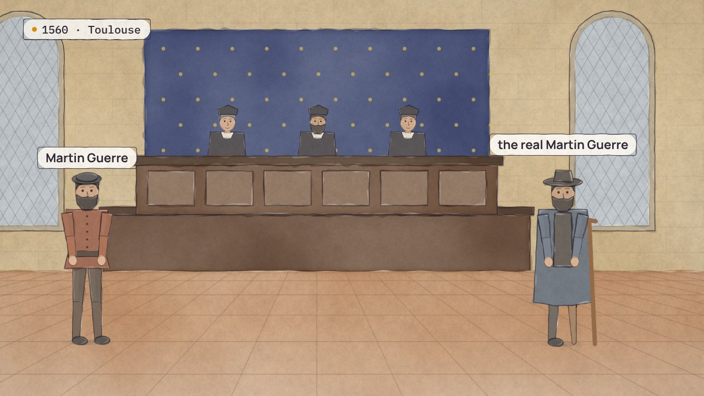

Siguiente · Película 2 de 9 →
¿Quién es?
¿Dos registros, una persona? Una búsqueda propone pares, los pesos dan una puntuación, y una encargada decide los difíciles una vez, con un motivo.
Temas › Datos maestros y de referencia › El mismo, en todas partes
Linh se graduó en la universidad en 2022 y volvió para hacer una maestría. Su solicitud en línea le dio un nuevo número de estudiante que nada vinculó con el anterior, así que ahora cinco registros guardan a una sola persona. Su solicitud le pide el certificado de notas del título que le dio la misma universidad, y la oficina de egresados la invita a la maestría que ya está haciendo. Cada sistema guardó un rol y lo llamó persona. Separa a la persona, los roles, los puntos de contacto y los identificadores, anota quién mantiene cada dato, y cuatro preguntas dicen qué más hay que gestionar como dato maestro.
La película está en inglés, con subtítulos en español. Esta página, los capítulos y las preguntas están en español.
Amplía Qué lo hace el mismo y Quién lo hace, y dónde cambia el significado
Presiona Reproducir, o salta a un capítulo. Activa Pausa para pensar y la película se detiene con una pregunta al final de los capítulos.
Descargar el video (en inglés)Archivos de subtítulosLeer el guion (en inglés)
¿Y ahora?
Las cuatro preguntas de Pausa para pensar, para una clase o un equipo. Abre una para ver la respuesta.
Los labs de esta película, y sus situaciones, entre los 30 labs y las 72 situaciones de la serie. Tu avance queda en este navegador.
Desarma: Cuatro tipos de datos →Desarma: Cuatro cosas, separadasDesarma: Quién mantiene quéDesarma: ¿Dato maestro o no?Desarma: ¿Actor o rol?Tú decides: 8 situacionesTodos los labs
Película 1 de 9.

Siguiente · Película 2 de 9 →
¿Dos registros, una persona? Una búsqueda propone pares, los pesos dan una puntuación, y una encargada decide los difíciles una vez, con un motivo.